Welcome to the LoKFreedom Info Database
This info was originally created/compiled by Marine for use on LoKFreedom.com.
Any use of this information on any other site is prohibited as per his wishes.
This site was created to be an up-to-date, HTML5/CSS3 friendly version for newer browsers, and to compile Marine's page with very useful information found on the LoKFreedom forums.
Please contact me at anthlubic@gmail.com if any information is incorrect, missing, out of date, or you have suggestions!
Experience & Stats Chart
| Fighter | Knight | Martial Artist | Thaumaturge | Wizard | Thief | ||||||||||||
|---|---|---|---|---|---|---|---|---|---|---|---|---|---|---|---|---|---|
| Level | Experience | Adds | HP | Adds | HP 1st | HP 2nd | Adds | HP | Adds | HP | MP | Adds | HP | MP | Adds | HP | MP |
| 3 | 1,600 | +2 | 44 | +2 | +2 | 44 | +0 | 42 | 8 | +0 | 36 | 8 | +1 | 38 | 8 | ||
| 4 | 3,200 | +2 | 54 | +2 | +2 | 58 | +1 | 51 | 15 | +1 | 46 | 15 | +2 | 47 | 13 | ||
| 5 | 6,400 | +2 | 64 | +2 | +2 | 72 | +1 | 60 | 22 | +1 | 54 | 22 | +2 | 56 | 18 | ||
| 6 | 12,800 | +3 | 74 | +3 | +3 | 86 | +1 | 69 | 29 | +1 | 63 | 29 | +2 | 65 | 23 | ||
| 7 | 25,600 | +3 | 84 | +3 | +3 | 100 | +1 | 78 | 36 | +1 | 72 | 36 | +2 | 74 | 28 | ||
| 8 | 51,200 | +3 | 94 | +3 | 131 | 141 | +3 | 114 | +2 | 87 | 43 | +2 | 81 | 43 | +3 | 83 | 33 |
| 9 | 102,400 | +4 | 104 | +4 | 141 | 151 | +4 | 128 | +2 | 96 | 50 | +2 | 90 | 50 | +3 | 92 | 38 |
| 10 | 204,800 | +4 | 114 | +4 | 151 | 161 | +4 | 142 | +2 | 105 | 57 | +2 | 99 | 57 | +3 | 101 | 43 |
| 11 | 409,600 | +4 | 124 | +4 | 161 | 171 | +4 | 156 | +2 | 114 | 64 | +2 | 108 | 64 | +3 | 110 | 48 |
| 12 | 819,200 | +5 | 134 | +5 | 171 | 181 | +5 | 170 | +3 | 123 | 71 | +3 | 117 | 71 | +4 | 119 | 53 |
| 13 | 1,638,400 | +5 | 144 | +5 | 181 | 191 | +5 | 184 | +3 | 132 | 78 | +3 | 126 | 78 | +4 | 128 | 58 |
| 14 | 3,276,800 | +5 | 154 | +5 | 191 | 201 | +5 | 198 | +3 | 141 | 85 | +3 | 135 | 85 | +4 | 137 | 63 |
| 15 | 6,553,600 | +6 | 164 | +6 | 201 | 211 | +6 | 212 | +3 | 150 | 92 | +3 | 144 | 92 | +4 | 146 | 68 |
| 16 | 13,107,200 | +6 | 174 | +6 | 211 | 221 | +6 | 226 | +4 | 159 | 99 | +4 | 153 | 99 | +5 | 155 | 73 |
| 17 | 26,214,400 | +6 | 184 | +6 | 221 | 231 | +6 | 240 | +4 | 168 | 106 | +4 | 162 | 106 | +5 | 164 | 78 |
| 18 | 52,428,800 | +7 | 194 | +7 | 231 | 241 | +7 | 254 | +4 | 177 | 113 | +4 | 171 | 113 | +5 | 173 | 83 |
| 19 | 104,857,600 | +7 | 204 | +7 | 241 | 251 | +7 | 268 | +4 | 186 | 120 | +4 | 180 | 120 | +5 | 182 | 88 |
| 20 | 209,715,200 | +7 | 214 | +7 | 251 | 261 | +7 | 282 | +5 | 195 | 127 | +5 | 189 | 127 | +6 | 191 | 93 |
| 21 | 419,430,400 | +8 | 224 | +8 | 261 | 271 | +8 | 296 | +5 | 204 | 134 | +5 | 198 | 134 | +6 | 200 | 98 |
| 22 | 838,860,800 | +8 | 234 | +8 | 271 | 281 | +8 | 310 | +5 | 213 | 141 | +5 | 207 | 141 | +6 | 209 | 103 |
| 23 | 1,677,721,600 | +8 | 244 | +8 | 281 | 291 | +8 | 324 | +5 | 222 | 148 | +5 | 216 | 148 | +6 | 218 | 108 |
| 24 | 3,355,443,200 | +9 | 254 | +9 | 291 | 301 | +9 | 338 | +6 | 231 | 155 | +6 | 225 | 155 | +7 | 227 | 113 |
| 25 | 6,710,886,400 | +9 | 264 | +9 | 301 | 311 | +9 | 352 | +6 | 240 | 162 | +6 | 234 | 162 | +7 | 236 | 118 |
| 26 | 13,421,772,800 | +9 | 274 | +9 | 311 | 321 | +9 | 366 | +6 | 249 | 169 | +6 | 243 | 169 | +7 | 245 | 123 |
| 27 | 26,843,545,600 | +10 | 284 | +10 | 321 | 331 | +10 | 380 | +6 | 258 | 176 | +6 | 252 | 176 | +7 | 254 | 128 |
| 28 | 53,687,091,200 | +10 | 294 | +10 | 331 | 341 | +10 | 394 | +7 | 267 | 183 | +7 | 261 | 183 | +8 | 263 | 133 |
| 29 | 107,374,182,400 | +10 | 304 | +10 | 341 | 351 | +10 | 408 | +7 | 275 | 190 | +7 | 270 | 190 | +8 | 272 | 138 |
| 30 | 214,748,364,800 | +11 | 314 | +11 | 351 | 361 | +11 | 422 | +7 | 284 | 197 | +7 | 279 | 197 | +8 | 281 | 143 |
Character Creation Guide
| Beginning Land | |||||||||
|---|---|---|---|---|---|---|---|---|---|
| Recommended Starting Stats |
Barbarian | Hovath | Mnar | Lemuria | Draznia | Leng | Illyra | Mu | |
| Fighter/Knight | STR: 18 DEX: 17 INT: 12 WIS: 12 WIL: 12 CON: 18 |
Mace: Capable (3) Sword: Mediocre (2) |
Bow: Mediocre (2) Staff: Mediocre (2) Sword: Capable (3) |
Bow: Mediocre (2) Mace: Capable (3) |
Dagger: Awkward (1) Halberd: Capable (3) Mace: Awkward (1) |
Bow: Capable (3) Dagger: Awkward (1) TwoHanded: Capable (3) |
Dagger: Mediocre (2) Sword: Capable (3) Hand: White (1) |
Dagger: Capable (3) Rapier: Capable (3) Sword: Mediocre (2) |
Dagger: Awkward (1) Mace: Capable (3) |
| Martial Artist | STR: 17 DEX: 18 INT: 12 WIS: 12 WIL: 12 CON: 18 |
Mace: Capable (3) Shuriken: Mediocre (2) Staff: Capable (3) Hand: Green Belt (3) |
Bow: Capable (3) Dagger: Capable (3) Sword: Capable (3) Hand: Blue Belt (4) |
Bow: Mediocre (2) Mace: Mediocre (2) Staff: Capable (3) Hand: Green Belt (3) |
Dagger: Mediocre (2) Staff: Capable (3) Sword: Capable (3) Hand: Green Belt (3) |
Shuriken: Mediocre (2) Sword: Capable (3) Hand: Green Belt (3) |
Bow: Mediocre (2) Dagger: Mediocre (2) Sword: Capable (3) Hand: Blue Belt (4) |
Shuriken: Mediocre (2) Staff: Capable (3) Hand: Green Belt (3) |
Dagger: Awkward (1) Mace: Capable (3) Staff: Capable (3) Hand: Green Belt (3) |
| Thaumaturge | STR: 15 DEX: 15 INT: 17 WIS: 18 WIL: 10 CON: 17 |
Mace: Mediocre (2) Sword: Awkward (1) Magic: Apprentice (2) |
Bow: Mediocre (2) Dagger: Mediocre (2) Staff: Mediocre (2) Magic: Apprentice (2) |
Bow: Awkward (1) Mace: Mediocre (2) Magic: Apprentice (2) |
Dagger: Awkward (1) Sword: Mediocre (2) Magic: Apprentice (2) |
Bow: Mediocre (2) Dagger: Awkward (1) Sword: Mediocre (2) Magic: Apprentice (2) |
Dagger: Mediocre (2) Sword: Mediocre (2) Hand: White (1) Magic: Shaman (1) |
Dagger: Mediocre (2) Rapier: Mediocre (2) Magic: Shaman (1) |
Dagger: Awkward (1) Mace: Mediocre (2) Magic: Apprentice (2) |
| Wizard | STR: 15 DEX: 15 INT: 18 WIS: 17 WIL: 10 CON: 16 |
Dagger: Awkward (1) Mace: Mediocre (2) Staff: Awkward (1) Magic: Apprentice (2) |
Dagger: Mediocre (2) Staff: Awkward (1) Sword: Mediocre (2) Magic: Aspirant (1) |
Dagger: Awkward (1) Mace: Mediocre (2) Staff: Awkward (1) Magic: Apprentice (2) |
Dagger: Awkward (1) Staff: Awkward (1) Sword: Mediocre (2) Magic: Apprentice (2) |
Bow: Mediocre (2) Dagger: Awkward (1) Staff: Awkward (1) Magic: Apprentice (2) |
Dagger: Awkward (1) Staff: Awkward (1) Sword: Mediocre (2) Magic: Apprentice (2) |
Dagger: Mediocre (2) Rapier: Mediocre (2) Staff: Awkward (1) Magic: Apprentice (2) |
Dagger: Awkward (1) Mace: Mediocre (2) Staff: Awkward (1) Magic: Aspirant (1) |
| Thief | STR: 15 DEX: 18 INT: 18 WIS: 12 WIL: 11 CON: 18 |
Dagger: Capable (3) Sword: Mediocre (2) Hand: Yellow Belt (2) Magic: Master of Mischief (2) |
Dagger: Capable (3) Sword: Mediocre (2) Hand: Yellow Belt (2) Magic: Master of Mischief (2) |
Dagger: Capable (3) Sword: Mediocre (2) Hand: Yellow Belt (2) Magic: Master of Mischief (2) |
Dagger: Capable (3) Sword: Mediocre (2) Hand: Yellow Belt (2) Magic: Skulker in Shadows (1) |
Dagger: Capable (3) Sword: Mediocre (2) Hand: Yellow Belt (2) Magic: Master of Mischief (2) |
Dagger: Capable (3) Sword: Mediocre (2) Hand: Yellow Belt (2) Magic: Master of Mischief (2) |
Dagger: Capable (3) Sword: Mediocre (2) Hand: Yellow Belt (2) Magic: Skulker in Shadows (1) |
Dagger: Capable (3) Sword: Mediocre (2) Hand: Yellow Belt (2) Magic: Master of Mischief (2) |
All lands are equal, the only differences are starting skills and the way your avatar looks.
All classes MUST set STR and DEX to at least 15 to receive combat adds.
Fighter/Knight: After some deaths, you will lose 1 STR and your new max will be 17.
Wiz/Thaum: INT and WIS determine amount of mana.
Thief: INT determines amount of mana.
All classes maximum stats through pots: STR 17, everything else 18.
Skills & Spells
| Level | Weapon | Martial Arts | Thaum | Wizard | Thief | Thaum Spells | Wizard Spells | Thief Spells |
|---|---|---|---|---|---|---|---|---|
| 0 | Untrained | Untrained | Untrained | Untrained | Untrained | N/A | N/A | N/A |
| 1 | Awkward | White Belt | Shaman | Aspirant | Skulker in Shadows | Curse [3] Strength [3] |
Magic Missile [3] Bonfire [4] |
Hide in Shadows [3] (improves with level) |
| 2 | Mediocre | Yellow Belt | Apprentice | Apprentice | Master of Mischief | Fear [4] | Close/Open Doors [3] (50) | Close/Open Doors [3] (50) |
| 3 | Capable | Green Belt | Initiate | Apprentice of Fire | Diviner of Magics | Light [3] Blind [4] Protect from Fire [4] |
Shield [4] (300) Breathe Water [6] (500) Light [3] (200) |
Find Secret Doors [4] Identify [3] (200) Breathe Water [6] (500) |
| 4 | Familiar | Blue Belt | Acolyte | Apprentice of Ice | Knight of Darkness | Protect from Cold [5] Stun [4] |
Protect from Fire [4](200) Darkness [4] (300) |
Darkness [4] (300) Make Recall Ring [8] (600) |
| 5 | Practiced | Red Belt | Healer | Apprentice of Illusions | Opener of Ways | Cure [3] Neutralize Poison [4] |
Protect from Cold [5] (300) Find Secret Doors [4] (400) Create Web [4] (100) Create Portal [5] (400) |
Create Portal [5] (400) Neutralize Poison [4] (300) |
| 6 | Competent | Black Belt | Canon Canoness |
Shaper of Fire | Lurker in Darkness | Turn Undead [5] Lightning Bolt [5] |
Fireball [5] (600) Wall of Fire [5] (700) |
Night Vision [8] (25000) |
| 7 | Experienced | 1st Dan Black Belt | Exorcist | Shaper of Ice | Obscurer of Ways | *Banish [7] (6400) Death [6] |
Ice Storm [6] (800) | Hide Door [9] (1200) |
| 8 | Skillful | 2nd Dan Black Belt | Priest Priestess |
Wizard | Master of Water | Raise Dead [10] | Concussion [10] (1000) | Speed [20] (10000) |
| 9 | Proficient | 3rd Dan Black Belt | Seer Seeress |
Shaper of Illusions | Master of Air | Fear Resistance [9] (1000) | Dispel Illusion [7] (500) Illusion Fire [9] (2000) Illusion Water [9] (2000) |
Feather Fall [8] (20000) |
| 10 | Exceptional | 4th Dan Black Belt | Summoner of Snakes | Illusionist | Master of Secrets | Create Snake [7] | Wizard Eye [13] (4000) Disintegrate [12] (6000) |
Wizard Eye [13] (4000) |
| 11 | Brilliant | 5th Dan Black Belt | Summoner of Spirits | Master of Earth | Master Thief | *Summon Phantasm [20] (1600) Blind Resistance [11] (4000) |
Peek [14] (10000) | *Venom [10] (25000) |
| 12 | Expert | 6th Dan Black Belt | Summoner of Demons | Master of Illusions | Shadow Thief | *Summon Demon [14] (3200) Protect from Fire/Ice [21] (2000) |
Fire Bolt (path) [10] (5000) Protect from Fire/Ice [21] (2000) |
|
| 13 | Astonishing | 7th Dan Black Belt | Prophet Prophetess |
Master of Air | Shadow Mage | Lightning Resistance [13] (6000) | Whirlwind [20] (7500) | |
| 14 | Amazing | 8th Dan Black Belt | Patriarch Matriarch |
Mage | Shadow Stalker | Protect from Poison [21] (12000) Poison Cloud [24] (8000) |
Ice Spear [14] (15000) | |
| 15 | Incredible | 9th Dan Black Belt | High Priest High Priestess |
Lord of Fire | Shadow Lord | Stun Resistance [15] (9000) | *Fire Storm [16] (10000) Fire Bolt (person) [10] |
|
| 16 | Master | White Sash | Master of Demons | Lord of Illusion | Thief of Wands | Death Resistance [17] (8000) | Dragon Breath Lightning [18] (12000) Dragon Breath Fire [18] (12000) Dragon Breath Ice [18] (12000) |
|
| 17 | Genius | Red Sash | Master of Dead | Lord of Air | Thief of Cups | Protect Blind/Fear [27] (20000) | Lightning Lance [20] (20000) | |
| 18 | Unearthly | Gold Sash | Master of Earth and Sky | Archmage | Thief of Pentacles | *Lightning Storm [32] (25000) | *Lightning Storm [32] (25000) | |
| 19 | Immortal | Master | Hierophant | Magus | Thief of Souls | Protect Stun/Death [52] (30500) | *Create Lava [33] (30000) |
The number within parenthesys () denotes cost to buy from trainer
Spells which are highlighted in red are not working properly in game.
Training Cost & Skill Gains
| Level | Swings/Mana w/o Training | Swings/Mana for 1% | Swings/Mana w/ Training | Swings/Mana for 1% | Training Cost | Per Rank (Rank=10%) |
|---|---|---|---|---|---|---|
| 0 | 50 | .5 | 25 | .25 | 25 | 3 |
| 1 | 67 | .67 | 34 | .34 | 100 | 10 |
| 2 | 100 | 1 | 50 | .5 | 300 | 30 |
| 3 | 160 | 1.6 | 80 | .8 | 800 | 80 |
| 4 | 267 | 2.67 | 134 | 1.34 | 2,000 | 200 |
| 5 | 457 | 4.57 | 229 | 2.29 | 4,800 | 480 |
| 6 | 800 | 8 | 400 | 4 | 11,200 | 1,120 |
| 7 | 1,422 | 14.22 | 712 | 7.12 | 25,600 | 2,560 |
| 8 | 2,560 | 25.6 | 1,280 | 12.8 | 57,600 | 5,760 |
| 9 | 4,655 | 46.55 | 2,328 | 23.28 | 128,000 | 12,800 |
| 10 | 8,534 | 85.34 | 4,267 | 42.67 | 281,600 | 28,160 |
| 11 | 15,753 | 157.53 | 7,877 | 78.77 | 614,400 | 61,440 |
| 12 | 29,258 | 292.58 | 14,629 | 146.29 | 1,331,200 | 133,120 |
| 13 | 54,614 | 546.14 | 27,307 | 273.07 | 2,867,200 | 286,720 |
| 14 | 102,400 | 1024 | 51,200 | 512 | 6,144,000 | 614,400 |
| 15 | 192,753 | 1927.53 | 96,375 | 963.75 | 13,107,200 | 1,310,720 |
| 16 | 364,089 | 3640.89 | 182,045 | 1820.45 | 27,852,800 | 2,785,280 |
| 17 | 689,853 | 6898.53 | 344,927 | 3449.27 | 58,982,400 | 5,898,240 |
| 18 | 1,310,720 | 13107.2 | 655,360 | 6553.6 | 124,518,400 | 12,451,840 |
| 19 | 2,496,610 | 24966.1 | 1,248,305 | 12483.05 | 262,144,000 | 26,214,400 |
| Total: | 5,275,122 | 2,637,564 |
You are considered fully trained (50% of a skill level) if the trainer says you must practice more when you attempt to train.
The training you receive remains with you permanently.
Skill levels lost through death can be regained simply by practicing.
The "Training Cost" is the number of coins it will take to fully train you for an entire skill level (10 ranks)
Remember though, you can only be trained a maximum of 5 ranks (half a level).
Magic skill increases per point spent, weapon skill increases per swing.
Black Broadsword
To get a Black Broadsword, you must first obtain the rocks to make it.
Ironbar is located to the east of the recall ring seller of Kesmai, across a bridge and just past the pit that goes to Kesmai -3.
Around 30 hexes east of the recall ring seller in total, you'll see his building to the south.
Put the 2 rocks at his feet and say "Ironbar, sell broadsword". He will then drop a Black Broadsword for you to take.
Infused Black Broadsword (IBBS)
Crystalline Gauntlets
CG1
Konran is slightly north of the stairs to Oakvael UD in troll town. Tell him "Konran, teach" and he will tell you of Drizulu and Glamuzu, the deputy and sheriff of Troll Town.
You must get the killing blow on Glamuzu, but anyone can kill Drizulu. Pick up the key that one of them will drop, bring it back to Konran.
Drop the key on the ground, type "Konran, teach" and pick up the cloth he gives you. Bring the cloth to Torii.
Drop cloth for Torii, type "Torii, teach".
You must now go to Leng and land the killing blow on Shidosha. Get the buddha that drops and bring it to Puck in Leng.
Drop the buddha and type "Puck, teach" and you will get your crystalline gauntlets!
CG2
You must make it past Wendy located on Oakvael -6 to reach Yuri for the upgrade. Type "Yuri, teach" to receive your CG2 upgrade.
Bring a party to make it past Wendy in Oakvael -6.
CG3
Hummingbird Longsword Quest
Returning Axe Quest
Returning Hammer
 Combat Adds +5, AC +2
Combat Adds +5, AC +2
To get one, you have three choices:
- Behind Daisy's Lair. After slaying her, go southwest through the green water. There will be 12+ baby dragons and pirahnas to kill. Go through the door to the north, it will be on the eastern most hex. It is not always there.
- Found on the table in Ydnac's lair. Not always there. Bring death protection for Ydnac, and watch out for his pet tiger.
- Slay the Giant in Axe Glacier, he can drop the Returning Hammer. Most difficult method of the three.
Silver Greataxe
Becoming a Knight
There are 2 ways to gain Knighthood:
- Hermann who is located in a cavern in the far northeastern region of the Kesmai surface. You will encounter Orc's, Boars, Wolves, Crocodiles, Bears, Centaurs, Griffin's
- Aniet who is in a pit located deep within the thick forest in the northeastern region of the Oakvael surface. You will encounter Crocodiles, KillerBees, Beetles, Orc's, Bears, Boars, Wolves.
Congratulations!! You are now a Knight. Your icon changed and a Knight ring will appear. Take the ring and wear it. The Knight ring when worn will give you the only spells Knights will ever get, which are Cure, Locate, Strength, Light, and Enchant Weapon.
While you are there you might as well buy a couple extra rings for 150 coins each, drop the coins the trainer's hex and type "Hermann, sell ring" or "Aniet, sell ring"
Knight's 1st Quest (37 Max HP)
- Train with Cudyl (Oakvael)
- Kill Daisy, take the Agate Gem (Kesmai)
- Bring Agate Gem to Harriette and Train (Kesmai)
- You Gain 37 Max Hit Points
To start this Quest you must see Cudyl in Oakvael. Cudyl is located to the far east of the portal landing area. The easiest way to find him is to use your locate spell. Once there stand on his hex and type "Cudyl, train". He will ask you if you want the quest then type "Cudyl, yes". He will tell you to go slay the small dragon. The small dragon is Daisy located in Kesmai-4. Slay Daisy and take the Agate Gem (the gem ties to the person who picks it up) to Harriette in Kesmai. Harriette is next to Hermann who is located in a cavern in the far northeastern region of the Kesmai surface. Put the gem at her feet and type "Harriette, train", she will give you an extra 37 max hit points.
Knight's 2nd Quest (10 Max HP)
 Reward from Brych. Knight's halberd is a Combat Adds +7, AC +6 weapon.
Reward from Brych. Knight's halberd is a Combat Adds +7, AC +6 weapon.
- Teach with Brych (Oakvael)
- Kill Yeti, take Dagger (Axe Glacier)
- Bring Dagger to Brych and Teach (Oakvael)
- Take Halberd to Gorffwyltera and Teach (Oakvael)
- You Gain 10 Max Hit Points
To start this Quest you must see Brych in Oakvael. Stand on his hex and type "Brych, teach" he will tell you to "bring me the special dagger". Now off to Axe Glacier to kill the Yeti for the Dagger. On your way to the Yeti you will encounter the Axe Drake and Mama the Ice Dragon. You can gather a high level party to help slay the Drake, Mama, and Yeti. Or have a high level thief slay the Drake for you and help you run past Mama, and then have the thief slay the Yeti. Like the Agate gem the Dagger ties to the person who picks it up. Take the Dagger back to Brych and put it at his feet and type "Brych, teach". He will take the Dagger and give you the Knight Halberd. Now off to see Gorf in the lower levels of Undead in Oakvael. On your way you will have to run through a fire room that has a Wyrm in it. After that there is a secret door that contains 4 Minotaurs that can only be hurt by the Silver Greataxe. Then there's another Wyrm before you get to Wendy. Now the greatest challenge is defeating Wendy, like the Minotaurs she can only be harmed with the Silver Greataxe. Her magic abilities are disabled at this writing, but she hits just as hard as the Ice Dragon. After defeating Wendy there will be 3 concussion casting spectres on your way to Gorf. Put the halberd at Gorffwyltera's feet and type "Gorffwyltera, teach" he will take the halberd and give you an extra 10 max hit points.
Underworld (Praetoseba) Quests
Entering UW
Underworld (Praetoseba) is usually done to restore skill levels and constitution lost from death, and also to restore your youth. It is also required if you are eaten by evil carniverous creatures such as dragons.You have to enter underworld from a black hex located in the graveyard of each land (in Axe Glacier the hex is a green gravemarker by the statue southwest of the portals), stand on the hex and type the chant in command mode: urruku ya zi xul
Entering UW drops ALL OF YOUR ITEMS on the hex you entered it on. LOCKER YOUR GEAR FIRST!
All commands are "npc name", teach (ex. "osiris, teach" or "o, teach" without quotes)
To accept quest "npc name, yes" (ex. "osiris, yes" or "o, yes" without quotes)
You start in UW in tall yellow grass, go south along the path, through the door, to the sky hexes, jump. Now you're in the main temple.
Stomach Quest
Find Osiris - West of starting hex in the main temple.Type "Osiris, teach" He will ask, "Do you wish to quest for a stomach?" Type "Osiris, yes"
Response 1: Give a suitable pet figurine to my son.
Intestines Quest
Find Anubis - Go east along the north river bank, inside the first building.Type "Anubis, teach" He will ask, "Do you wish to quest for a intestines?" Type "Anubis, yes"
Response 1: Take a special bow to the Goddess of the Hunt.
Liver Quest
Find Sekhmet - Go east along the south river bank inside the third building, down stairs - see Ra or NefertemType "Sekhmet, teach" He will ask, "Do you wish to quest for a liver?" Type "Sekhmet, yes"
Response 1: The Sun God shall be your guide.
"Lead a lawful cobra to Re.Harakhti."
Lungs Quest
See Khnumeri – use map"Do you wish to quest for lungs?"
-"Seek the most beautiful woman, she will give you lightness."
GET Feather Fall boots from Cleopatra
Response 1: "Seek the one who lies beneath the tomb."
Leaving UW:
Go east on the north river bank to sky hexes, then north you should see a yellow brick road follow it to the northeast, through trees, then south east to the teleport hex, and that's it!If you lose any of the items you need to finish a quest, you will need to talk to Uajyt and have your quests reset. Uajyt: Do you wish to give up all your organs and start again?! Your body is as when it enter this land.
Conference Commands
Top Ten List:
/topten = Top Ten Characters on the server
/topten r = Thieves
/topten k = Knights
/topten f = Fighters
/topten t = Thaumaturges
/topten w = Wizards
/stats = See Stats for Current Character
/deathpile = Delays a scheduled reset for 10 minutes to recover a dpile, the command is only active when the server reset messages appear in game, you will see confirmation when the command works. Might be broken.
/page <players name> "message to send" = To Page another player
ex. /page BillyBob = Player is paging you from conference room #
ex. /page BillyBob "hi"
/rename charactername = Renames your character. Replace charactername with desired name.
Gameplay Commands
SHOPKEEPER COMMANDS:
<Shopkeeper Name>, buy
Shopkeeper buys the last item on the counter
ex. rolf, buy
<Shopkeeper Name>, buy all
Shopkeeper buys all the items on the counter
ex. rolf, buy all
<Shopkeeper Name>, appraise
Shopkeeper describes the item on the counter and how much he will buy it for
ex. rolf, appraise
<Shopkeeper Name>, sell <item>
ask a shopkeeper to sell you an item (applies only to the ones listed below)
ex. Ironbar, sell broadsword
ex. Vulcan, sell axe
ex. Silvermoon, sell greataxe
WEAPONS TRAINER COMMANDS:
<Trainer Name>, train <amount>
trains only the specificed amount of gold
ex. trainer name, train 1000
<Trainer Name>, train
trains the skill of the weapon in your right hand
<Trainer Name>, critique <skill> skill
<Trainer Name>, critique bow skill
tells you your skill level for using bows
<Trainer Name>, critique dagger skill
tells you your skill level for using daggers
<Trainer Name>, critique flail skill
tells you your skill level for using flails
<Trainer Name>, critique halberd skill
tells you your skill level for using halberds
<Trainer Name>, critique mace skill
tells you your skill level for using mace weapons
(hammers, raxes, maces)
<Trainer Name>, critique rapier skill
tells you your skill level for using rapiers
<Trainer Name>, critique shuriken skill
tells you your skill level for using shuriken weapons
(anything other than mace/dagger that you throw)
<Trainer Name>, critique staff skill
tells you your skill level for using staff weapons
<Trainer Name>, critique sword skill
tells you your skill level for using longswords
<Trainer Name>, critique twohanded skill
tells you your skill level for using twohanded weapons
(BBS, SGA, Greatsword)
<Trainer Name>, critique threestaff skill
tells you your skill level for using threestaff weapons
<Trainer Name>, critique hand skill
tells you your skill level for using hand-to-hand combat
MAGIC TRAINER COMMANDS:
<Trainer Name>, critique magic skill
tells you your skill level for using magic spells
<Trainer Name>, train
will train you in magic skill
(Spellbook must be in right hand)
<Trainer Name>, show spells
shows the spells that the trainer will sell to you and how much they cost
<Trainer Name>, teach #
trainer adds the spell to your spellbook, # is the number of the spell you want to learn
(Spellbook must be in right hand)
FIGURINE COMMANDS:
<Creature Name>, follow
Directs the figurine to follow you
<Creature Name>, stop
Directs the figurine to rest and go away
<Creature Name>, follow <name>
directs a controlled creature to follow another character
ROLE PLAYING COMMANDS:
ROFL you are Rolling On the Floor Laughing
<G> grin
<VBG> very big grin
<VEG> very evil grin
ACT "phrase" ex. act "is giving a thumbs-up sign"
ANGRY you are angry
APPLAUD you are applauding
BEAM you are beaming
BLUSH you are blushing
BURP you burped
CONFUSED you are confused
CRY you are crying
EVILGRIN you are giving a evil grin
FROWN you are frowning
GASP you are gasping
GIGGLE you are giggling
GLOWER you are glowering
GRIMACE you are grimacing
GRIN you are grinning
GROAN you are groaning
GRUMBLE you are grumbling
JUMP you are jumping
LAUGH you are laughing
MUMBLE you are mumbling
MUTTER you are muttering
NOD you are nodding
PANT you are panting
POUT you are pouting
SALUTE you are saluting
SCREAM you are screaming
SHIVER you are shivering
SHRUG you are shrugging
SIGH you are sighing
SMILE you are smiling
SMIRK you are smirking
SNARL you are snarling
SNEEZE you are sneezing
SNICKER you are snickering
WAVE you are waving
WINK you are winking
YAWN you are yawning
MISC IN-GAME COMMANDS:
swim
throw <item/weapon> at <name of target>
cast at <name of target> "or" c at <name of target> spell must be warmed
fight <name of target> hold down the shift key for friendly fire
Common Errors
Placeholder
Maps
Placeholder
Kesmai Lairs
Mouse over loot for additional information!- Weakness: Any
- Hit Points: Low to Moderate
- Damage: 10-24
- Attacks: Weapon swing, knockback
- Magic Abilities: None
- Difficulty Rating (1-10): 1
- Loot: Diamonds to sell
- Weakness: Any
- Hit Points: Very few
- Damage: 1-20
- Attacks: Knockback, Mace, Kick
- Magic Abilities: None
- Difficulty Rating (1-10): 3
- Loot: 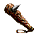
- Weakness: Any
- Hit Points: Moderate
- Damage: 20-50
- Attacks: Claws, tail, Wings
- Magic Abilities: Fireball
- Difficulty Rating (1-10): 6
- Loot:
 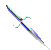
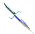
- Weakness: Blue Glow
- Hit Points: Moderate
- Damage: 40-90 with death, 10-20 with weapon
- Attacks: Staff
- Magic Abilities: Death, Stun
- Difficulty Rating (1-10): 6
- Loot:
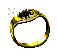
- Weakness: Immune to Death
- Hit Points: Moderate
- Damage: 30-50
- Attacks: Charges (Jumpkick), Bites
- Magic Abilities: None
- Difficulty Rating (1-10): 6
- Loot: Tanned for Heavy Jacket f/i +3, Waterbreathing, Mana Regen +1
Oakvael Lairs
Mouse over loot for additional information!- Weakness: Anything
- Hit Points: Moderate
- Damage: 10-30
- Attacks: Doom Crossbow
- Magic Abilities: None
- Difficulty Rating (1-10): 5
- Loot: 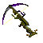
- Weakness: Blue glow, most spells
- Hit Points: Moderate to high moderate
- Damage: 30-75
- Attacks: Bite, above average stun rate
- Magic Abilities: Poison
- Difficulty Rating (1-10): 7
- Loot:
 Rare chance of DP.
Rare chance of DP.
- Weakness: Anything except Magic (Ice spear?)
- Hit Points: Moderate
- Damage: 20-50
- Attacks: Fists
- Magic Abilities: Fireball
- Difficulty Rating (1-10): 7
- Loot:
 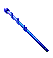
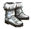
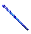
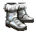
- Weakness: Heavy Silver (SGA, golem weapons, etc)
- Hit Points: High
- Damage: 60-120
- Attacks: Dragon Attacks (EATS)
- Magic Abilities: None (Whirlwind disabled)
- Difficulty Rating (1-10): 9
- Loot: Tanned into the same scales as daisy
Leng Lairs
Mouse over loot for additional information!- Weakness: Blue glow, immune to death/stun(?)
- Hit Points: Low to moderate
- Damage: 25-40
- Attacks: Occasional knockback
- Magic Abilities: None
- Difficulty Rating (1-10): 4
- Loot: 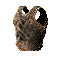
- Weakness: ???
- Hit Points: Moderate
- Damage: 40-80, sometimes 100?
- Attacks: ???
- Magic Abilities: ???
- Difficulty Rating (1-10): ???
- Loot: 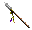 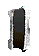 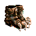
- Weakness: Blue Glow
- Hit Points: Above Average
- Damage: 40-100
- Attacks: Tail, Wings, Dragon Stuff, Knockback
- Magic Abilities: Fire
- Difficulty Rating (1-10): 8
- Loot: 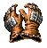
- Weakness: Blue Glow
- Hit Points: Unknown - Tons
- Damage: 60-100
- Attacks: Drake Stuff, EATS
- Magic Abilities: Lightning Bolt, Poison(?)
- Difficulty Rating (1-10): 9
- Loot:
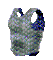
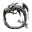
- Weakness: Anything
- Hit Points: High
- Damage: 1-40
- Attacks: Fan, MA Skill
- Magic Abilities: None
- Difficulty Rating (1-10): 7
- Loot:
- Weakness: Silver, Hummer
- Hit Points: Tons
- Damage: 50-175
- Attacks: Hand, Sword, Vampire Stuff
- Magic Abilities: Death, Aging, Poison
- Difficulty Rating (1-10): 10
- Loot: 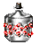 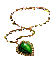 3/3 silver gauntlets very rarely on ground
- Weakness: Blunt only, no magic
- Hit Points: Massive.
- Damage: 100-200 damage per swing
- Attacks: ???
- Magic Abilities: ???
- Difficulty Rating (1-10): 11. Hardest lair crit in game.
- Loot: Two golem stones which can be traded for golem weapons.
Axe Glacier Lairs
Mouse over loot for additional information!- Weakness: Silver, immune to magic(?)
- Hit Points: Moderate
- Damage: 15-30 with physical
- Attacks: Teeth
- Magic Abilities: None
- Difficulty Rating (1-10): 5
- Loot:
- Weakness: Blue Glow
- Hit Points: Moderate
- Damage: 40-80, Knockback(?)
- Attacks: Weapon
- Magic Abilities: Death(?), Stun(?)
- Difficulty Rating (1-10): 6
- Loot:
- Weakness: Any
- Hit Points: Moderate
- Damage: 75-120
- Attacks: Jumpkicks
- Magic Abilities: None
- Difficulty Rating (1-10): 8
- Loot:
- Weakness: ???
- Hit Points: ???
- Damage: ???
- Attacks: ???
- Magic Abilities: ???
- Difficulty Rating (1-10): ???
- Loot: 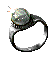
- Weakness: Blue Glow
- Hit Points: Moderate
- Damage: 40-80, Knockback(?)
- Attacks: Drake stuff, wings, bite, claw, etc.
- Magic Abilities: Lightning bolt up to 100 dmg which can stun.
- Difficulty Rating (1-10): 7
- Loot:
- Weakness: Heavy Silver (SGA, golem weapons)
- Hit Points: Tons
- Damage: Up to 120, knockback
- Attacks: Dragon stuff, EATS.
- Magic Abilities: Ice Storm
- Difficulty Rating (1-10): 10
- Loot:
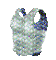

- Weakness: Blue Glow
- Hit Points: Moderate to High
- Damage: 90-200 hp per attack
- Attacks: Mauls you.
- Magic Abilities: Breathes Ice
- Difficulty Rating (1-10): 10
- Loot:
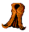
- Weakness: Blunt, ???
- Hit Points: Jill moderate to high, Jack tons.
- Damage: Jill: 80 average. Jack: Up to 120.
- Attacks: Threestaff, Jumpkicks.
- Magic Abilities: Jill: Instant Magic Missile for 45-60, Jack: Lightning Bolt twice in a row for a lot with stun. Bring LRes.
- Difficulty Rating (1-10): 10+
- Loot: All immortal and elite gear (already blessed) should drop from these guys EXCEPT the immortal helm and boots (white glow).
UnderKingdom Lairs
Mouse over loot for additional information!- Weakness: Blue glow
- Hit Points: Average
- Damage: 30-80
- Attacks: Drake stuff
- Magic Abilities: Lightning Bolt
- Difficulty Rating (1-10): 8
- Loot: 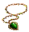
 Orugugra
Orugugra- Weakness: Any
- Hit Points: Moderate
- Damage: 1-20
- Attacks: Tentacle, Bite
- Magic Abilities: Poison
- Difficulty Rating (1-10): 9
- Loot:
- Weakness: Ice Spear, Magic Missile, Blue Glow
- Hit Points: Moderate
- Damage: 40-160
- Attacks: Rapier
- Magic Abilities: None
- Difficulty Rating (1-10): 9
- Loot: 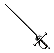
- Weakness: Blue Glow, No Night Vision
- Hit Points: Tons
- Damage: 40-160
- Attacks: Greatsword, Jump Kick
- Magic Abilities: None
- Difficulty Rating (1-10): 10
- Loot:
- Weakness: Any
- Hit Points: Few
- Damage: 10-20
- Attacks: Bite
- Magic Abilities: Poison 50pts delay of 2
- Difficulty Rating (1-10): 7
- Loot: Tans into thief jacket (Poison protection, +1 mana regen, non-hindering). +1/+1 Staff for Thief Random Quests.
- Weakness: Blue Glow
- Hit Points: Average
- Damage: ??
- Attacks: Returning Dagger
- Magic Abilities: None
- Difficulty Rating (1-10): 8
- Loot:
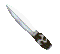
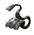
- Weakness: Ice Spear, Magic Missile, Death
- Hit Points: Tons
- Damage: 40-160
- Attacks: Longsword, Knocks around
- Magic Abilities: Curse
- Difficulty Rating (1-10): 10
- Loot:
Kesmai Map
Oakvael Map
Leng Map
Axe Glacier Map
UnderKingdon Map
Underworld (Praetoseba) Map
Swords
 You are looking at a steel longsword with a deadly edge.
You are looking at a steel longsword with a deadly edge.Combat adds AC +1
Combat adds +4 AC +2
 You are looking at a fine sword made of an otherworldly metal.
You are looking at a fine sword made of an otherworldly metal.Looking at the blade makes you dizzy, as if you were looking at the wings of a hummingbird.
Lawful, blue glow, combat adds +6 AC +2
See the Hummingbird Sword Quest.
Twohanded
Combat adds AC +1
Combat adds ???
Combat adds +5, AC +4, lawful, blue glow.
See Black Broadsword Quest.
Lawful, heavy silver, combat adds +5, AC +1.
See the Silver Greataxe Quest.
Bows
substance in places.
(+3)You are looking at a well made crossbow. (Need accurate description)
Blue glow, combat adds +6(?), thief only
Drops from the Doom.Orc in Oakvael.
Daggers
Silver, combat adds +2
Combat adds +3, AC +1
the wood grained texture of the metal.
Blue glow, neutral, Combat adds +3
Drops from the Yeti, used in quests.
This item is for Thief use only
Combat adds are +5
Drops from Carfel in Under Kingdom.
Flails
Attached by a length of chain is a length of solid oak.
Combat adds AC +1
Halberds
 You are looking at a halberd with a steel head mounted upon a stout oak pole
You are looking at a halberd with a steel head mounted upon a stout oak poleAble to defend user quite well. AC +2
TO DO: Warlord's Halberd DescriptionCombat adds +4, AC +4
Drops from Warlord in Leng
You are looking at a heavy halberd.The pole is perfect ash, and the blade is forged from a golden-copper colored alloy.
Lawful, blue glow, Combat adds +7, AC +6
Reward from Brych. See Knight's 2nd Quest.
Maces
 You are looking at a viciously spiked steel mace.
You are looking at a viciously spiked steel mace.Combat adds AC +1
and a smaller blade on the back for a more effective backswing.
Combat adds AC +1
Drops from Trog in Kesmai and from Troll in Leng on bridge.
The hammer would easily block a blow, AC +1
*The weapon is chaotic, emitting faint red glow (UK, unusable)
You are looking at a heavy, well made, and quite large steel throwing hammer.
Lawful, blue glow, combat adds +5, AC +2
Drops from Ydnac's lair, behind Daisy's lair, and Giant in Axe Glacier.
See Returning Hammer Quest.
Blue glow, lawful, Combat adds +5, AC +2
See Returning Axe Quest.
Rapiers
Combat adds AC +1
Blue glow, combat adds +4, AC +4
Drops from Sword Master in Under Kingdom.
Shurikens
Combat adds +2
Drops from Goblin Thief
a ring of feathers. It flies too quickly to be seen.
Combat adds +6, silver (+8 when blessed in Leng at Elder.Mara)
Drops from Jack & Jill in Axe Glacier.
Threestaff
Drops from Tak NPC Martial Artist in town.
Drops from Shidosha in Leng.
Staff
AC +1
AC +1
Combat adds +1
AC +1
Combat adds unknown, returns when thrown
Rare drop chance off Nightwing in Leng
The staff contains the spell of Fireball. 10 Charges.
Drops from mobs in UnderKingdom
#1 Contains spell of Cure. AC +1, 5 charges, Lich Twins in Oakvael.
#2 Contains spell of Raise Dead, AC +1, 5 charges
Drops from Kosh in Leng and Overlord in UnderKingdom
AC +1. Throwing it turns into a snake pet.
The weapon is lawful, combat adds +3, AC +1.
Chaotic: worthless, can't use.
Drops from Minotaurs in Oak Serp level and -4 Kesmai.
Casts Lightning Bolt when thrown. 8 Charges.
Drops from mobs in Under Kingdom.
Blue glow, lawful, Thaum and Wiz only, AC Unknown, effortless block
Drops from Overlord in Under Kingdom
Shields
AC +1
AC +2 Arrow +1.
AC +3 Arrow +3, commonly found in Leng Green Floor dungeon.
AC Unknown, Arrow +4, Stun +5, Lightning Resist
Drops from Jack & Jill and rarely from UK Yasnaki Complex.
Body Armor
Starter armor for all classes.
Take any wyvern to a tanner.
+5 Fire Protect
Take any salamander to a tanner.
Commonly found from trolls and hobgoblins in most lands.
Commonly found on most chaotic NPCs.
Take Trog to the tanner.
+1 Plate
You are looking at a vest made of dusky red dragon scales.+5 F/I, AC +3, Arrow Deflect +3
Take Daisy, Wendy or Kosh to a tanner.
+10 Fire/Ice Prot, AC +4, Arrow Deflect +4
Take any drake corpse to the tanners.
+15 Fire/Ice Prot, +30 Concussion Prot, AC +5, Arrow +5
Take the corpse of Mama the ice dragon to the tanner.
Does not hinder, Stats ???
Immortal? Drops from Jack and Jill.
Immortal scales. +20 Fire/Ice Prot, Conc Prot +40, AC +5, Arrow Deflect 10
Drops from Jack and Jill.
Gauntlets
Combat adds +1
Drops commonly in Kes -1 through -4.
Combat adds +2, AC +1
Found commonly in Kes -3 and -4, and many other places.
AC +3
Drops commonly around Axe Glacier giant fortress level.
Blue glow, Combat adds +2, AC +2
Drops from Kosh in Leng.
Silver, Combat adds +3, AC +3
Rarely found on the floor in Vlad's lair.
from the knuckles.
Combat adds +5, AC +4, blue glow
See the Crystalline Gauntlets quest on how to obtain and upgrade.
Helms & Skulls
+5 Stun
Found uncommonly in Kesmai -2 through -4.
+7 Stun
Drops from Trog.
Nightvision, Stun ???
Comes from Nightwing in Leng, rarely from regular Griffins in Leng?
+10 Fire/Ice Prot???
Drops from Daisy in Kesmai -4.
+10 Fire/Ice Prot, +10 stun
Drops from Kosh and Axe Glacier Drake.
Stats unknown.
Drops from Troll in Leng, on the bridge.
Nightvision, +10 Stun
Drops from Kosh in Leng.
Nightvision, +10 Fire/Ice Prot, +10 Stun
Drops from Kosh in Leng.
 You are looking at an unusual steel helm set with white wings.
You are looking at an unusual steel helm set with white wings.Immortal. Night Vision, +20 Stun, +20 Concussion Prot
Drops from Jack and Jill.
The writting on the helm cannot be decrypted. it is of unknown origin. The helm is glowing.
Elite. Night Vision, +60 Conc Prot, +5 Stun
Drops from Jack and Jill.
Boots
Everyone starts with these.
Waterbreathing
Take a crocodile to the tanner.
Feather Fall
Drops from many, many lair crits such as Axe Drake and Kosh.
Feather Fall, very small hindrance for MA
Drops from Nightwing in Leng.
Immortal. Feather Fall, Dexterity +8, AC +1
Drops from Jack and Jill.
The writting on the boots cannot be decrypted. it is of unknown origin.
Elite. Feather Fall, Will not hinder, HP Regen +2, Stam Regen +2
Drops from Jack and Jill.
Robes
Thick and heavy, +5 Fire/Ice Prot, +1 Mana
Drops from Kesmai -4, Leng, and other places.
Thick and heavy, +5 Fire/Ice Prot, +1 Mana
Drops from Ydnac in Kesmai.
Thick and heavy, +5 Fire/Ice Prot, +1 Mana
Mobs in Serpent level in Oakvael.
Thick and heavy, +5 Fire/Ice Prot, +1 Mana
Drops from Kosh in Leng.
Thick and heavy, +5 Fire/Ice Prot, +1 Mana
Drops from Lich Twins in Oakvael.
Extremely light, +1 Mana
Drops from Presence in Doom.Orc lair in Oakvael.
Thick and heavy, +5 Fire/Ice Prot, +1 Mana
Drops from Drake in Axe Glacier.
Extremely light, +10 Fire/Ice Prot.
Drops from Shidosha in Leng.
Thick and heavy, +5 Fire/Ice Prot, +1 Mana
Drops from Kosh in Leng.
Extremely light, +5 Fire/Ice Prot, +1 Mana
Drops from Yeti in Axe Glacier.
Thick and heavy, soft to the touch, +5 Fire/Ice Prot, +2 Mana
Drops from Overlord in Underkingdom.
 "z'xei xdlmr beshume voy varsel cnmrb't 'sde'roy &"
"z'xei xdlmr beshume voy varsel cnmrb't 'sde'roy &"The writting on the robe cannot be decrypted. it is of unknown origin. The robe is glowing!
Elite. +10 Fire/Ice Prot, Mana Regen +2, Light armor AC.
Drops from Jack & Jill.
Immortal. Will not hinder, Fire/Ice Protection +8, Mana Regen +1, HP Regen +8
Drops from Jack & Jill
Rings
Wearing the ring stores your current hex, removing it instantly teleports you back there.
Sold in all towns for 150 gold.
Unlimited charges of Identify.
Hold ring in left hand, hold item in right hand, and double click the ring to ID an item.
Drops commonly in Kesmai -1 and -2.
Drops commonly from gift runners in Kesmai, sells for 1000 gold.
Worn by Knights, allows them to cast their spells.
Hermann will sell more for 150 gold each if you lose yours.
Contains the spell of Blind Resistance.
Found in Leng Mausoleum off random mobs.
Drops from mobs in Axe Glacier.
Needed to get into Silvermoon and Vulcan's in Axe Glacier. Hold in Right Hand at night.
Contains the spell of Water Breathing.
Commonly dropped in many dungeons.
In the middle is mounted a dazzling diamond.
Contains the spell of Protection from Cold +20.
 You are looking at a soft ring of ting green feathers.
You are looking at a soft ring of ting green feathers.Contains the spell of Blind Resistance.
No longer drops? (Replaced by Rosewood ring?)
Contains the spell of Death Resistance.
Drops from Ydnac in Kesmai.
Contains the spell of Lightning Resistance.
Drops rarely from Leng Drake.
Contains the spell of Protection from Fire and Ice +20
Common drop off Gift Makers in Leng Mausoleum.
"...swirl on the inside." Contains the weak spell of Shield +1.
"...swirl wildly on the inside." Contains strong spell of Shield +3.
Rare/uncommon drop off many lair crits and regular mobs in many dungeons.
Contains the spell of Strength +1.
Drops from Kesmai -1, -2, -3, -4.
Contains the spell of Strength +3.
Drops from Kesmai -4 and many dungeons past it.
Contains the spell of Strength +6.
Drops from many lair crits and stronger dungeons such as Troll Town, Leng Green Floor, Oakvael UD, etc.
You are looking at a large silver ring with a deep black stone set among rubies.Contains the spell of Protection from Stun and Death.
Drops from Mama the Ice Dragon in Axe Glacier.
It is surprisingly heavy, and almost hot to the touch.
Immortal. Contains the spell of Giant Strength (+12 Strength)
Drops from Jack and Jill in Axe Glacier.
Immortal. Contains the spell of Immortal Shield +9
Drops from Jack and Jill in Axe Glacier.
Given by Elvis in UnderKingdom for bowl of peanut butter and bananas from Overlord.
The writting on the ring cannot be decrypted. it is of unknown origin.
Elite. Lightning Resistance, +18 HP Regen.
Drops from Jack and Jill in Axe Glacier, must be blessed in UK by the giants.
Amulets & Necklaces
AC +1, Weak cold prot
 You are looking at a small fox fur scarf.
You are looking at a small fox fur scarf.Protection from Fire and Ice +20.
Commonly found in Axe Glacier.
3 charges of Locate Spell.
Contains the spell of Lightning Resistance.
Rare drop off UnderKingdom Drake.
along the length of the chain.
Protection from Fire +20
along the length of the chain with a large blue sapphire in the middle.
Protection from Fire and Ice +20
Contains spell of Neutralize Poison. 3 charges.
Found in Axe Glacier and other lands randomly.
Contains the spell of Protection from Stun and Death, 6 charges
Drops from Troll King in Under Kingdom. See Hummingbird Sword Quest
Contains the spell of Protection from Stun and Death
Drops from Vlad in Leng Mausoleum.
The amulet contains the spell of Protection from Poison.
Drops from Overlord in Underkingdom.
The writting on the helm cannot be decrypted. it is of unknown origin. The amulet is glowing.
Elite. Prot from Death and Stun. HP Regen +2.
Drops from Jack and Jill in Axe Glacier, must be blessed in UK by the giants.
Bracers
Strength +1
Drops in Kesmai -1 to -4.
Strength +3 or Swo+6, must ID to find out.
Dropped randomly in many mid level dungeons.
Shield +3
Drops from Vlad in Leng
Shield +6
Drops from ???
Sells for 1500 gold.
Drops randomly from Leng Mausoleum mobs.
Stun Resistance.
Drops randomly from Leng Mausoleum mobs.
Water Breathing.
Drops from the Yeti in Axe Glacier.
Death Resistance.
Rare drop from Ydnac.
Protection from Fear and Blind.
Drops uncommonly from Kosh in Leng.
Protection from Stun and Death.
Drops from Overlord in Underkingdom.
 You are looking at a thick golden bracelet set with flawless sapphires around the entire length.
You are looking at a thick golden bracelet set with flawless sapphires around the entire length.Immortal. Protection from Death and Stun. +1 Mana Regen.
Drops from Jack and Jill.